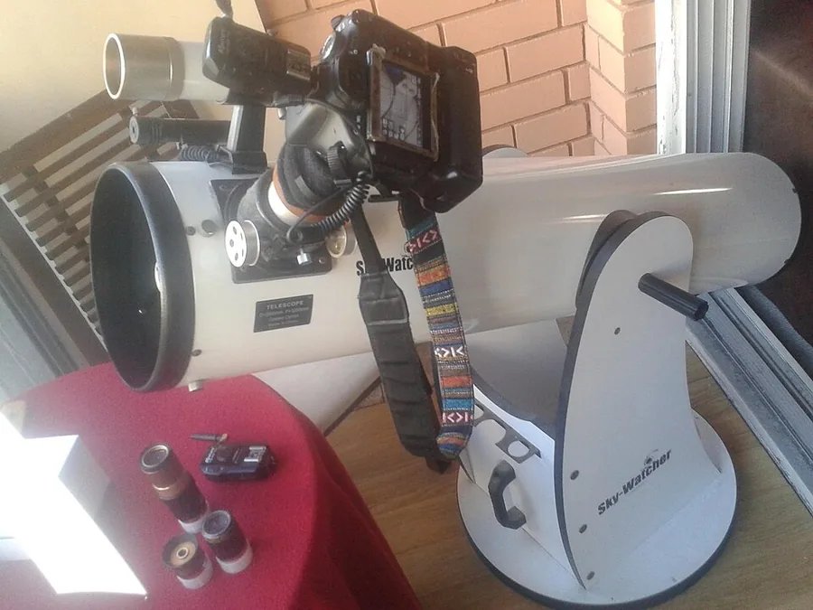

Sky-Watcher Heritage 130 Tabletop
This collapsible truss Dobsonian packs a 130 mm mirror into a tabletop package you can carry to a dark-sky site in one trip. Its fast f/5 focal ratio delivers wide, bright views of nebulae and star clusters — ideal for working through the Messier catalog on your first serious observing nights.
Learn more ↗